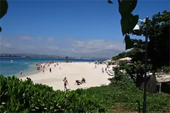
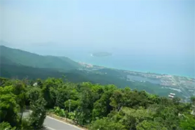
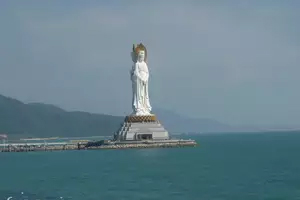
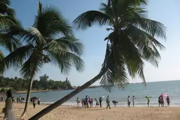
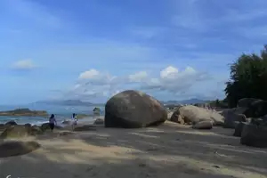
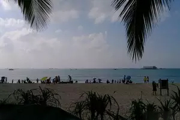
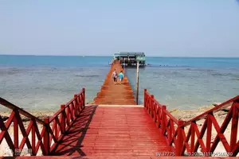
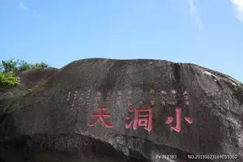

三亚
首页
景点
美食
住宿
交通
旅游攻略
三亚景点

蜈支洲岛
作为中、高端旅游者必选的海南旅游景点，蜈支洲岛集热带海岛旅游资源的丰富性和独特性于一体......

亚龙湾热带天堂森林公园
亚龙湾热带天堂森林公园位于中国唯一的热带滨海城市海南省三亚市亚龙湾国家旅游度假区......

三亚市南山文化旅游区
南山文化旅游区位于三亚南山，距市区40公里，游览区以北有255国道和海南环岛高速公路通过......

三亚亚龙湾
亚龙湾位于中国最南端的热带滨海旅游城市三亚市东南28公里处，是海南最南端的一个半月形海湾......

三亚天涯海角
天涯海角风景区（必游）出三亚市沿海滨西行26公里，到达了马岭山下，便是“天涯海角”奇景......

大东海
大东海为国家AAAA级景区，三面环山，一面大海，一排排翠绿椰林环抱沙滩，蓝天、碧海、青山、......

三亚西岛
西岛又名玳瑁岛，位于三亚湾国家自然保护区内，全岛面积2.8平方公里，是海南第二大岛......

三亚大小洞天
南山大小洞天旅游区，古称鳌山大小洞天，位于三亚市以西40公里处的南山西南隅......
三亚鹿回头
鹿回头位于三亚市南部3公里的三亚湾，是三面临海的半岛，状似坡鹿站在海边回头观望......
三亚旅游